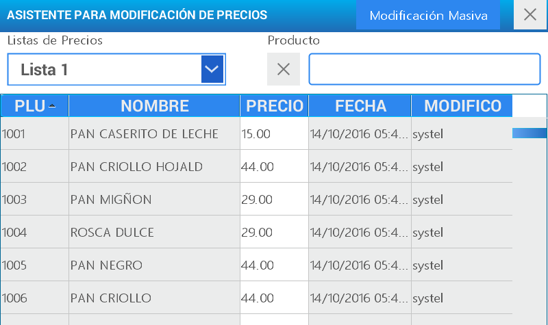
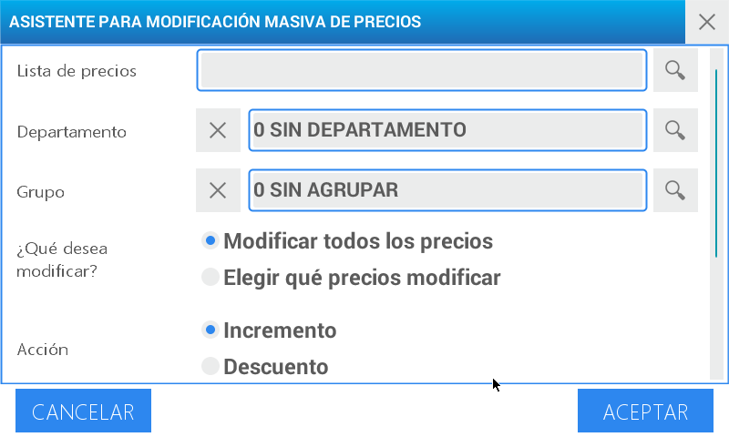
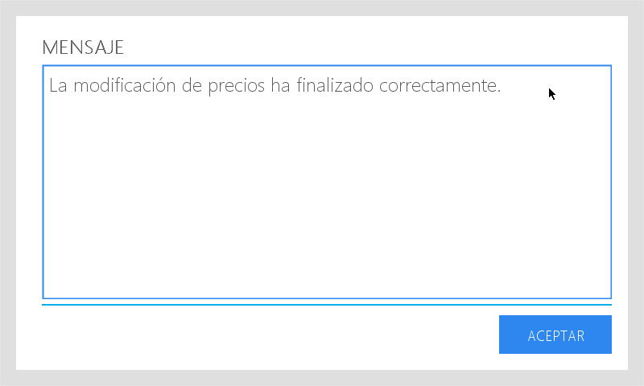

Asistente para modificación de precios
Permite modificar una lista de precios, generar un aumento por porcentaje o por valor, así como ingresar un descuento de manera general o particular.

A modo de ejemplo, realizaremos un descuento del 5% a todos los productos que se encuentran en la lista de precios denominada Lista 1
Ingrese al menú presionando la tecla
Seleccione usuario y digite la contraseña correspondiente. Luego presione
Elija la opción Asistente precios ubicada en el cuadrante superior izquierdo de la pantalla
Seleccione la opción de búsqueda en el primer campo denominado Lista de precios

Seleccione Modificación Masiva

Elija Lista 1 y presione seleccionar

También puede habilitar el campo de escritura para realizar la búsqueda de un registro por palabra clave.
En el caso de ser necesario, puede limitar la búsqueda utilizando las opciones de Departamento y Grupo. En ambos campos la alternativa de búsqueda se ejecuta siguiendo los pasos descriptos anteriormente. Y se agrega la posibilidad de borrar el registro seleccionado presionando (X) Para utilizar estos filtros es preciso configurarlos previamente. Para ello consulte: Menú - ABM - Apartado Departamentos y Grupos.
En el campo ¿Qué desea modificar? escoja Modificar todos los precios
Luego seleccione la Acción presionando Descuento
A continuación presione Porcentaje en la línea Monto o Porcentaje
Presione el campo de % para activarlo y con el teclado numérico digite 5

Presione aceptar
En la pantalla se visualiza un mensaje que confirma la operación realizada.
